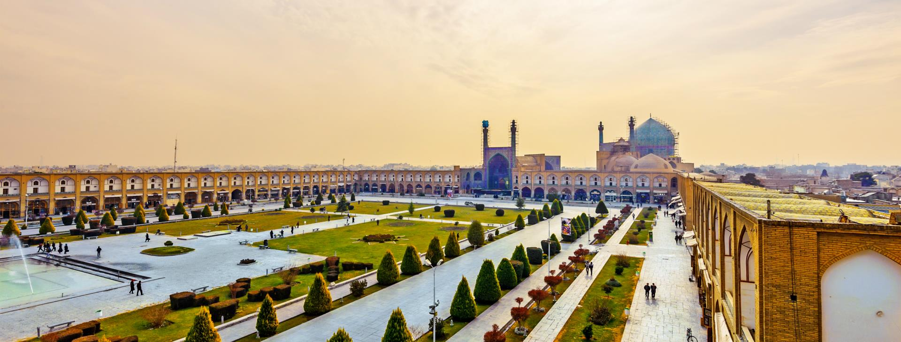
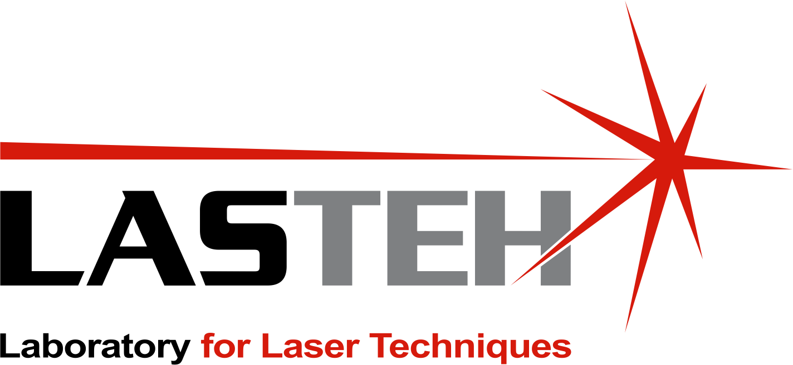
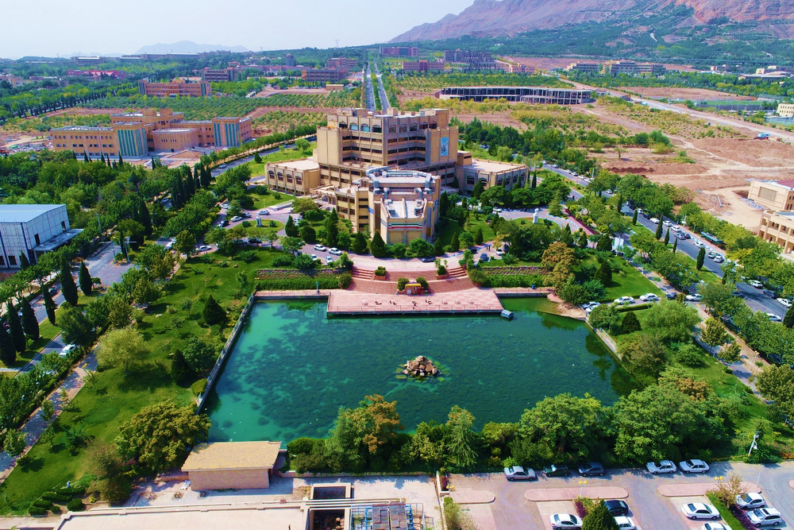

Isfahan, Iran
About
PhD researcher in Mechanical Engineering at the University of Ljubljana.
Profile
My research focuses on laser ultrasonics, photoacoustics, two-dimensional materials, and multiphysics modelling.
I hold an MSc in Optics–Laser Physics from the University of Isfahan, where I studied electron transport in two-dimensional systems with tilted Dirac cones.
Research Environment
University of Ljubljana · Faculty of Mechanical Engineering · LASTEH

Research Group
Laboratory for Laser Techniques, Faculty of Mechanical Engineering.
Academic Journey


2016–2023
Education
University of Ljubljana, Slovenia
Two-dimensional materials-based piezophotonic composites for laser ultrasound generation
University of Isfahan, Iran
Investigation of Klein tunneling effect in the presence of tilted Dirac cones
University of Isfahan, Iran
Languages